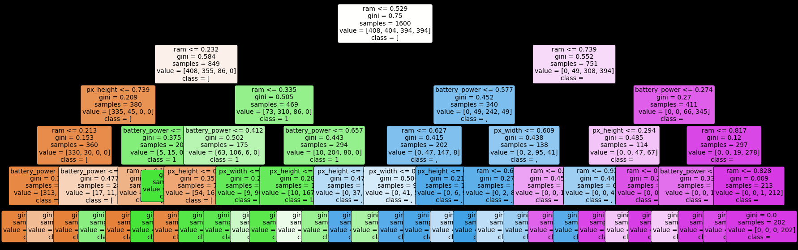
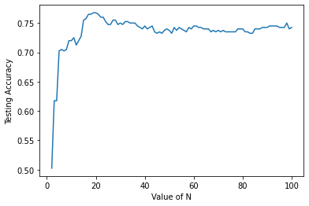

UAS Studi Kasus Mobile Price
Contents
UAS Studi Kasus Mobile Price#
Model KNN,Naive Bayes,K-Means,Decision Tree dan Random Forest
#Normalisasi Data
import pandas as pd
import numpy as np
data = pd.read_csv('https://raw.githubusercontent.com/rahadis/datamining/main/train.csv')
data.fillna(0,inplace=True)
data
| battery_power | blue | clock_speed | dual_sim | fc | four_g | int_memory | m_dep | mobile_wt | n_cores | ... | px_height | px_width | ram | sc_h | sc_w | talk_time | three_g | touch_screen | wifi | price_range | |
|---|---|---|---|---|---|---|---|---|---|---|---|---|---|---|---|---|---|---|---|---|---|
| 0 | 842 | 0 | 2.2 | 0 | 1 | 0 | 7 | 0.6 | 188 | 2 | ... | 20 | 756 | 2549 | 9 | 7 | 19 | 0 | 0 | 1 | 1 |
| 1 | 1021 | 1 | 0.5 | 1 | 0 | 1 | 53 | 0.7 | 136 | 3 | ... | 905 | 1988 | 2631 | 17 | 3 | 7 | 1 | 1 | 0 | 2 |
| 2 | 563 | 1 | 0.5 | 1 | 2 | 1 | 41 | 0.9 | 145 | 5 | ... | 1263 | 1716 | 2603 | 11 | 2 | 9 | 1 | 1 | 0 | 2 |
| 3 | 615 | 1 | 2.5 | 0 | 0 | 0 | 10 | 0.8 | 131 | 6 | ... | 1216 | 1786 | 2769 | 16 | 8 | 11 | 1 | 0 | 0 | 2 |
| 4 | 1821 | 1 | 1.2 | 0 | 13 | 1 | 44 | 0.6 | 141 | 2 | ... | 1208 | 1212 | 1411 | 8 | 2 | 15 | 1 | 1 | 0 | 1 |
| ... | ... | ... | ... | ... | ... | ... | ... | ... | ... | ... | ... | ... | ... | ... | ... | ... | ... | ... | ... | ... | ... |
| 1995 | 794 | 1 | 0.5 | 1 | 0 | 1 | 2 | 0.8 | 106 | 6 | ... | 1222 | 1890 | 668 | 13 | 4 | 19 | 1 | 1 | 0 | 0 |
| 1996 | 1965 | 1 | 2.6 | 1 | 0 | 0 | 39 | 0.2 | 187 | 4 | ... | 915 | 1965 | 2032 | 11 | 10 | 16 | 1 | 1 | 1 | 2 |
| 1997 | 1911 | 0 | 0.9 | 1 | 1 | 1 | 36 | 0.7 | 108 | 8 | ... | 868 | 1632 | 3057 | 9 | 1 | 5 | 1 | 1 | 0 | 3 |
| 1998 | 1512 | 0 | 0.9 | 0 | 4 | 1 | 46 | 0.1 | 145 | 5 | ... | 336 | 670 | 869 | 18 | 10 | 19 | 1 | 1 | 1 | 0 |
| 1999 | 510 | 1 | 2.0 | 1 | 5 | 1 | 45 | 0.9 | 168 | 6 | ... | 483 | 754 | 3919 | 19 | 4 | 2 | 1 | 1 | 1 | 3 |
2000 rows × 21 columns
#fd1 = data.drop(columns=['blue', 'dual_sim', 'four_g', 'm_dep', 'mobile_wt', 'px_height', 'px_width', 'sc_h', 'sc_w', 'talk_time', 'three_g', 'touch_screen', 'wifi', 'price_range'],axis=1)
#fd1 = data.drop(columns=['blue', 'dual_sim', 'm_dep', 'mobile_wt', 'sc_h', 'sc_w', 'talk_time', 'three_g', 'touch_screen', 'wifi', 'price_range'],axis=1)
fd1 = data.drop(columns=['blue', 'dual_sim', 'four_g', 'm_dep', 'mobile_wt', 'px_height', 'px_width' , 'talk_time', 'three_g', 'touch_screen', 'wifi', 'price_range'],axis=1)
fd1
| battery_power | clock_speed | fc | int_memory | n_cores | pc | ram | sc_h | sc_w | |
|---|---|---|---|---|---|---|---|---|---|
| 0 | 842 | 2.2 | 1 | 7 | 2 | 2 | 2549 | 9 | 7 |
| 1 | 1021 | 0.5 | 0 | 53 | 3 | 6 | 2631 | 17 | 3 |
| 2 | 563 | 0.5 | 2 | 41 | 5 | 6 | 2603 | 11 | 2 |
| 3 | 615 | 2.5 | 0 | 10 | 6 | 9 | 2769 | 16 | 8 |
| 4 | 1821 | 1.2 | 13 | 44 | 2 | 14 | 1411 | 8 | 2 |
| ... | ... | ... | ... | ... | ... | ... | ... | ... | ... |
| 1995 | 794 | 0.5 | 0 | 2 | 6 | 14 | 668 | 13 | 4 |
| 1996 | 1965 | 2.6 | 0 | 39 | 4 | 3 | 2032 | 11 | 10 |
| 1997 | 1911 | 0.9 | 1 | 36 | 8 | 3 | 3057 | 9 | 1 |
| 1998 | 1512 | 0.9 | 4 | 46 | 5 | 5 | 869 | 18 | 10 |
| 1999 | 510 | 2.0 | 5 | 45 | 6 | 16 | 3919 | 19 | 4 |
2000 rows × 9 columns
y = data['price_range'].values
X= fd1
from sklearn.model_selection import train_test_split
X_train, X_test, y_train, y_test=train_test_split(X, y, test_size=0.2, random_state=1)
X_train.shape + X_test.shape
(1600, 9, 400, 9)
X_test
| battery_power | clock_speed | fc | int_memory | n_cores | pc | ram | sc_h | sc_w | |
|---|---|---|---|---|---|---|---|---|---|
| 674 | 1034 | 2.6 | 2 | 45 | 3 | 4 | 969 | 15 | 1 |
| 1699 | 1002 | 1.8 | 1 | 45 | 7 | 7 | 1234 | 19 | 13 |
| 1282 | 609 | 0.5 | 4 | 10 | 6 | 6 | 1905 | 16 | 3 |
| 1315 | 1510 | 0.6 | 1 | 32 | 3 | 8 | 854 | 8 | 2 |
| 1210 | 805 | 1.7 | 0 | 58 | 3 | 10 | 3397 | 7 | 6 |
| ... | ... | ... | ... | ... | ... | ... | ... | ... | ... |
| 400 | 1266 | 1.9 | 0 | 7 | 3 | 12 | 2532 | 10 | 5 |
| 763 | 1741 | 1.8 | 0 | 14 | 8 | 0 | 3387 | 11 | 3 |
| 385 | 1880 | 1.8 | 4 | 18 | 3 | 5 | 3333 | 17 | 15 |
| 1667 | 1967 | 0.5 | 0 | 46 | 1 | 7 | 1567 | 15 | 2 |
| 1820 | 665 | 0.7 | 0 | 31 | 5 | 2 | 690 | 5 | 2 |
400 rows × 9 columns
Save Normalisasi Data#
from pathlib import Path
filepath = Path('/content/gdrive/MyDrive/DataMining/TUGAS/mobileprice.csv')
filepath.parent.mkdir(parents=True, exist_ok=True)
X.to_csv(filepath)
from sklearn import preprocessing
le = preprocessing.LabelEncoder()
le.fit(y)
y = le.transform(y)
y
array([1, 2, 2, ..., 3, 0, 3])
y_target = data['price_range']
y = y_target.values.tolist()
print(y[:10])
[1, 2, 2, 2, 1, 1, 3, 0, 0, 0]
y_target
0 1
1 2
2 2
3 2
4 1
..
1995 0
1996 2
1997 3
1998 0
1999 3
Name: price_range, Length: 2000, dtype: int64
#Preprocesing Min-Max
from sklearn.preprocessing import MinMaxScaler
scaler = MinMaxScaler()
scaled = scaler.fit_transform(X)
nama_fitur = X.columns.copy()
scaled_fitur = pd.DataFrame(scaled,columns=nama_fitur)
scaled_fitur
| battery_power | clock_speed | fc | int_memory | n_cores | pc | ram | sc_h | sc_w | |
|---|---|---|---|---|---|---|---|---|---|
| 0 | 0.227789 | 0.68 | 0.052632 | 0.080645 | 0.142857 | 0.10 | 0.612774 | 0.285714 | 0.388889 |
| 1 | 0.347361 | 0.00 | 0.000000 | 0.822581 | 0.285714 | 0.30 | 0.634687 | 0.857143 | 0.166667 |
| 2 | 0.041416 | 0.00 | 0.105263 | 0.629032 | 0.571429 | 0.30 | 0.627205 | 0.428571 | 0.111111 |
| 3 | 0.076152 | 0.80 | 0.000000 | 0.129032 | 0.714286 | 0.45 | 0.671566 | 0.785714 | 0.444444 |
| 4 | 0.881764 | 0.28 | 0.684211 | 0.677419 | 0.142857 | 0.70 | 0.308658 | 0.214286 | 0.111111 |
| ... | ... | ... | ... | ... | ... | ... | ... | ... | ... |
| 1995 | 0.195725 | 0.00 | 0.000000 | 0.000000 | 0.714286 | 0.70 | 0.110102 | 0.571429 | 0.222222 |
| 1996 | 0.977956 | 0.84 | 0.000000 | 0.596774 | 0.428571 | 0.15 | 0.474613 | 0.428571 | 0.555556 |
| 1997 | 0.941884 | 0.16 | 0.052632 | 0.548387 | 1.000000 | 0.15 | 0.748530 | 0.285714 | 0.055556 |
| 1998 | 0.675351 | 0.16 | 0.210526 | 0.709677 | 0.571429 | 0.25 | 0.163816 | 0.928571 | 0.555556 |
| 1999 | 0.006012 | 0.60 | 0.263158 | 0.693548 | 0.714286 | 0.80 | 0.978888 | 1.000000 | 0.222222 |
2000 rows × 9 columns
#Split Data 20%
from sklearn.model_selection import train_test_split
X_train, X_test, y_train, y_test=train_test_split(scaled_fitur, y, test_size=0.2, random_state=1)
X_train.shape + X_test.shape
(1600, 9, 400, 9)
#Save normalisasi
X_train
| battery_power | clock_speed | fc | int_memory | n_cores | pc | ram | sc_h | sc_w | |
|---|---|---|---|---|---|---|---|---|---|
| 0 | 0.227789 | 0.68 | 0.052632 | 0.080645 | 0.142857 | 0.10 | 0.612774 | 0.285714 | 0.388889 |
| 816 | 0.203073 | 0.08 | 0.000000 | 1.000000 | 0.428571 | 0.70 | 0.043292 | 0.428571 | 0.333333 |
| 790 | 0.273881 | 0.96 | 0.000000 | 0.709677 | 0.571429 | 0.05 | 0.028594 | 0.285714 | 0.277778 |
| 361 | 0.265865 | 0.00 | 0.684211 | 0.887097 | 0.142857 | 0.90 | 0.028862 | 0.428571 | 0.055556 |
| 592 | 0.509018 | 0.00 | 0.631579 | 1.000000 | 0.571429 | 0.90 | 0.247728 | 0.642857 | 0.166667 |
| ... | ... | ... | ... | ... | ... | ... | ... | ... | ... |
| 1791 | 0.468938 | 0.00 | 0.000000 | 0.145161 | 0.142857 | 0.60 | 0.378407 | 0.857143 | 0.722222 |
| 1096 | 0.436206 | 0.60 | 0.315789 | 0.532258 | 0.571429 | 0.80 | 0.803314 | 0.785714 | 0.833333 |
| 1932 | 0.144957 | 0.44 | 0.052632 | 0.451613 | 0.285714 | 0.60 | 0.359433 | 0.357143 | 0.500000 |
| 235 | 0.682699 | 0.52 | 0.315789 | 0.145161 | 0.000000 | 0.40 | 0.120524 | 1.000000 | 0.444444 |
| 1061 | 0.682031 | 0.08 | 0.210526 | 0.419355 | 0.000000 | 0.25 | 0.297167 | 0.642857 | 0.277778 |
1600 rows × 9 columns
import joblib
filename = '/content/gdrive/MyDrive/DataMining/TUGAS/Normalisasi.sav'
#filename = '/content/gdrive/MyDrive/DataMining/TUGAS/Normalisasi7.sav'
#filename = '/content/gdrive/MyDrive/DataMining/TUGAS/tanpanormalisasi.sav'
joblib.dump(scaler, filename)
#joblib.dump(scaler, filename)
['/content/gdrive/MyDrive/DataMining/TUGAS/Normalisasi.sav']
#Save Data Fix
from pathlib import Path
filepath = Path('/content/gdrive/MyDrive/DataMining/TUGAS/Datafix.csv')
#filepath = Path('/content/gdrive/MyDrive/DataMining/TUGAS/Datafix7.csv')
filepath.parent.mkdir(parents=True, exist_ok=True)
X_test.to_csv(filepath)
#Inisialisasi Model KNN
from sklearn.metrics import accuracy_score
from sklearn.preprocessing import StandardScaler
from sklearn.metrics import accuracy_score
import joblib
from sklearn.neighbors import KNeighborsClassifier
from sklearn import metrics
#Try running from k=1 through 30 and record testing accuracy
k_range = range(1,31)
scores = {}
scores_list = []
for k in k_range:
# install model
knn = KNeighborsClassifier(n_neighbors=k)
knn.fit(X_train,y_train)
# save model
#filenameKNN = '/content/gdrive/MyDrive/DataMining/TUGAS/Model/KNNmodel'+str(k)+'.pkl'
filenameKNN = '/content/gdrive/MyDrive/DataMining/tugas/Model/KNNmodel'+str(k)+'.pkl'
joblib.dump(knn,filenameKNN)
y_pred=knn.predict(X_test)
scores[k] = accuracy_score(y_test,y_pred)
scores_list.append(accuracy_score(y_test,y_pred))
scores
FileNotFoundErrorTraceback (most recent call last)
<ipython-input-16-4e7fb2151479> in <module>
13 #filenameKNN = '/content/gdrive/MyDrive/DataMining/TUGAS/Model/KNNmodel'+str(k)+'.pkl'
14 filenameKNN = '/content/gdrive/MyDrive/DataMining/tugas/Model/KNNmodel'+str(k)+'.pkl'
---> 15 joblib.dump(knn,filenameKNN)
16 y_pred=knn.predict(X_test)
17 scores[k] = accuracy_score(y_test,y_pred)
/usr/local/lib/python3.8/dist-packages/joblib/numpy_pickle.py in dump(value, filename, compress, protocol, cache_size)
550 NumpyPickler(f, protocol=protocol).dump(value)
551 elif is_filename:
--> 552 with open(filename, 'wb') as f:
553 NumpyPickler(f, protocol=protocol).dump(value)
554 else:
FileNotFoundError: [Errno 2] No such file or directory: '/content/gdrive/MyDrive/DataMining/tugas/Model/KNNmodel1.pkl'
from google.colab import drive
drive.mount('/content/gdrive')
Mounted at /content/gdrive
y_pred
array([0, 0, 1, 1, 3, 1, 0, 3, 1, 3, 0, 3, 1, 1, 2, 0, 0, 1, 0, 3, 3, 3,
0, 2, 3, 1, 2, 2, 1, 2, 1, 1, 2, 0, 3, 3, 0, 0, 0, 0, 1, 0, 2, 0,
0, 1, 2, 2, 2, 3, 2, 2, 1, 3, 1, 3, 1, 3, 3, 0, 0, 2, 1, 3, 1, 1,
0, 2, 3, 2, 1, 2, 0, 2, 2, 1, 2, 2, 1, 0, 0, 3, 1, 1, 2, 2, 3, 0,
1, 1, 3, 0, 1, 1, 2, 3, 3, 0, 2, 3, 3, 3, 1, 1, 2, 0, 0, 0, 0, 2,
0, 3, 0, 1, 2, 2, 3, 1, 0, 1, 2, 0, 0, 0, 3, 1, 0, 0, 1, 1, 0, 2,
0, 3, 3, 0, 3, 1, 1, 0, 0, 0, 3, 1, 0, 2, 0, 1, 0, 1, 2, 3, 0, 1,
0, 1, 1, 0, 2, 1, 3, 0, 2, 1, 3, 1, 2, 1, 3, 2, 2, 0, 2, 2, 0, 3,
3, 0, 0, 2, 0, 3, 0, 0, 2, 3, 3, 1, 2, 2, 2, 2, 2, 3, 0, 1, 2, 3,
3, 1, 2, 2, 0, 0, 3, 2, 3, 2, 0, 2, 1, 3, 1, 0, 2, 0, 1, 0, 1, 1,
0, 0, 1, 0, 3, 3, 0, 1, 1, 1, 0, 2, 3, 3, 3, 1, 0, 1, 2, 1, 2, 2,
2, 2, 0, 0, 2, 0, 3, 3, 2, 0, 2, 1, 0, 1, 0, 2, 2, 0, 3, 0, 1, 1,
1, 2, 2, 0, 3, 1, 3, 0, 0, 2, 2, 3, 1, 1, 0, 2, 3, 1, 1, 2, 2, 0,
1, 2, 0, 1, 1, 3, 2, 3, 0, 0, 1, 2, 3, 2, 1, 2, 0, 0, 3, 1, 1, 0,
0, 0, 2, 2, 2, 2, 0, 2, 3, 1, 3, 3, 3, 1, 0, 2, 2, 1, 1, 0, 2, 3,
2, 1, 1, 0, 1, 2, 3, 2, 0, 3, 3, 2, 2, 3, 1, 2, 3, 2, 3, 2, 1, 3,
1, 0, 2, 1, 3, 2, 2, 3, 3, 0, 3, 0, 1, 1, 2, 2, 0, 0, 2, 3, 2, 0,
2, 3, 3, 0, 1, 2, 1, 2, 3, 3, 2, 0, 3, 3, 0, 1, 3, 3, 2, 0, 1, 2,
3, 3, 1, 0])
##Visualisasi Score
%matplotlib inline
import matplotlib.pyplot as plt
#plot the relationship between K and the testing accuracy
plt.plot(k_range,scores_list)
plt.xlabel('Value of K for KNN')
plt.ylabel('Testing Accuracy')
Text(0, 0.5, 'Testing Accuracy')
scores_list.index(max(scores_list))+1 , max(scores_list)
(27, 0.695)
from sklearn.metrics import confusion_matrix, accuracy_score, recall_score, precision_score, f1_score
knn = KNeighborsClassifier(n_neighbors=scores_list.index(max(scores_list))+1)
knn.fit(X_train,y_train)
y_pred_knn =knn.predict(X_test)
cm = confusion_matrix(y_test,y_pred_knn)
precision = round(precision_score(y_test,y_pred_knn, average="macro")*100,2)
acc = round(accuracy_score(y_test,y_pred_knn)*100,2)
recall = round(recall_score(y_test,y_pred_knn, average="macro")*100,2)
f1score = round(f1_score(y_test, y_pred_knn, average="macro")*100,2)
print('Konfusi Matrix\n',cm)
print('precision: {}'.format(precision))
print('recall: {}'.format(recall))
print('fscore: {}'.format(f1score))
print('accuracy: {}'.format(acc))
Konfusi Matrix
[[81 11 0 0]
[21 60 14 1]
[ 1 32 58 15]
[ 0 3 24 79]]
precision: 69.7
recall: 69.95
fscore: 69.63
accuracy: 69.5
#Inisialisasi Model Naive Bayes
Eksekusi pada Model#
from sklearn.naive_bayes import GaussianNB
clf = GaussianNB()
clf.fit(X_train,y_train)
y_pred = clf.predict(X_test)
probas = clf.predict_proba(X_test)[:,1]
y_pred
array([0, 0, 1, 0, 3, 1, 1, 2, 2, 3, 0, 3, 1, 1, 3, 0, 1, 1, 1, 2, 3, 3,
1, 2, 3, 2, 2, 2, 2, 2, 2, 1, 2, 0, 3, 3, 0, 0, 1, 0, 1, 0, 2, 1,
0, 1, 3, 2, 2, 2, 2, 3, 1, 3, 2, 3, 2, 3, 3, 1, 0, 2, 1, 3, 1, 2,
1, 2, 3, 2, 1, 2, 0, 2, 3, 1, 2, 1, 0, 0, 0, 3, 2, 2, 3, 2, 3, 0,
2, 1, 3, 0, 1, 2, 1, 3, 3, 0, 2, 3, 3, 3, 0, 2, 2, 1, 1, 1, 0, 2,
0, 3, 1, 1, 2, 2, 3, 1, 1, 1, 2, 0, 0, 0, 3, 0, 0, 0, 1, 1, 0, 3,
0, 3, 3, 0, 3, 2, 1, 1, 0, 0, 2, 1, 0, 3, 1, 1, 0, 1, 3, 3, 2, 1,
0, 1, 1, 0, 3, 1, 3, 1, 3, 2, 3, 2, 2, 1, 3, 2, 2, 0, 2, 2, 0, 3,
3, 0, 0, 2, 0, 3, 0, 0, 3, 3, 3, 1, 2, 2, 2, 3, 2, 3, 0, 1, 2, 3,
3, 1, 3, 2, 0, 1, 2, 1, 2, 1, 0, 1, 1, 2, 1, 0, 2, 0, 1, 0, 2, 1,
0, 1, 2, 1, 3, 3, 1, 2, 2, 1, 1, 2, 3, 3, 2, 1, 0, 1, 2, 1, 2, 3,
2, 2, 0, 0, 2, 0, 3, 3, 3, 0, 2, 1, 0, 2, 1, 3, 2, 0, 3, 1, 1, 1,
2, 1, 2, 0, 3, 2, 2, 1, 0, 1, 2, 3, 1, 1, 0, 2, 3, 2, 1, 2, 2, 0,
0, 3, 0, 0, 1, 3, 2, 3, 0, 0, 1, 3, 3, 2, 1, 2, 0, 0, 3, 1, 1, 0,
0, 0, 2, 2, 2, 1, 0, 1, 2, 1, 3, 3, 3, 1, 1, 2, 2, 1, 1, 0, 2, 3,
3, 1, 1, 0, 1, 1, 3, 2, 0, 3, 2, 2, 2, 3, 1, 2, 3, 2, 3, 2, 0, 3,
1, 0, 3, 1, 3, 2, 3, 3, 3, 0, 3, 0, 1, 1, 2, 3, 0, 0, 3, 3, 2, 0,
2, 3, 3, 0, 2, 2, 1, 3, 2, 3, 3, 0, 3, 2, 0, 0, 3, 3, 2, 0, 3, 2,
3, 3, 1, 0])
Save Model Naive bayes#
filenameNB = '/content/gdrive/MyDrive/DataMining/TUGAS/Model/ModelNB7.pkl'
joblib.dump(clf,filenameNB)
['/content/gdrive/MyDrive/DataMining/TUGAS/Model/ModelNB7.pkl']
Menghitung Probas#
probas
array([1.64207813e-01, 4.12608650e-01, 7.09271773e-01, 1.71113321e-01,
1.20302798e-03, 8.07139242e-01, 5.37006021e-01, 5.52018908e-02,
1.18282716e-01, 1.02680694e-05, 3.58510309e-02, 4.99493385e-05,
5.76475353e-01, 7.03328708e-01, 8.97912869e-04, 4.84426663e-02,
5.07410406e-01, 6.34407994e-01, 7.41384582e-01, 5.93454100e-02,
4.34583312e-05, 5.53520675e-05, 7.44622738e-01, 1.38889141e-01,
2.27346026e-05, 1.25876932e-01, 8.86211579e-02, 2.27895928e-02,
3.67554284e-01, 1.15171608e-01, 3.36681406e-01, 6.24185507e-01,
9.38181435e-03, 2.87689336e-02, 1.19280908e-05, 2.62594011e-03,
2.34301662e-01, 1.65467614e-01, 7.79720004e-01, 3.32729762e-01,
8.17402449e-01, 2.57257667e-01, 3.05518221e-02, 7.77276880e-01,
5.25320680e-02, 8.03291720e-01, 1.15065513e-03, 1.69114969e-01,
4.27924349e-01, 8.65403673e-02, 2.68351398e-01, 2.97189065e-04,
7.21774978e-01, 1.07372144e-04, 2.42454200e-01, 3.24503752e-04,
3.66108166e-01, 2.26810390e-03, 2.23665946e-04, 8.29332243e-01,
2.32572247e-02, 9.60256114e-02, 7.18131199e-01, 6.66398233e-03,
5.40268587e-01, 2.96064424e-01, 5.78122804e-01, 2.01730417e-01,
2.85914925e-03, 2.30267271e-02, 5.63376840e-01, 8.44152768e-02,
5.82701311e-02, 2.50072894e-01, 1.48581657e-04, 8.35164217e-01,
1.78160062e-01, 6.37523645e-01, 1.69102932e-01, 1.80782211e-02,
8.16015929e-02, 1.18329038e-04, 2.54038674e-01, 3.89093360e-02,
3.94939671e-04, 1.60363095e-01, 1.92409367e-03, 4.04729638e-01,
3.72752833e-01, 7.33799115e-01, 1.43890692e-02, 6.72125997e-02,
7.96617752e-01, 3.96931774e-01, 7.34048897e-01, 4.22686347e-03,
1.02301101e-04, 5.61600403e-02, 1.74074881e-01, 3.35163072e-03,
2.24776411e-04, 8.80434711e-03, 2.09295408e-01, 2.96978250e-01,
3.44150504e-01, 7.37939975e-01, 7.65650212e-01, 8.29703134e-01,
6.04446741e-02, 1.76261959e-01, 2.03821989e-01, 4.00760052e-04,
7.88469594e-01, 7.80459815e-01, 5.17444032e-02, 3.30946916e-01,
2.80272654e-03, 7.75426593e-01, 7.42039965e-01, 8.27159743e-01,
7.99649361e-02, 6.53467197e-02, 1.64462797e-01, 1.18382931e-01,
7.37361735e-04, 6.21653758e-02, 7.78035842e-02, 8.31893589e-02,
8.09469056e-01, 6.24906268e-01, 1.35227857e-01, 1.45688512e-03,
1.70713934e-02, 1.45964082e-04, 5.03005789e-04, 1.61683712e-01,
3.84942605e-05, 9.35454553e-02, 5.26384058e-01, 7.71340072e-01,
4.76942750e-02, 4.15614378e-02, 3.69451550e-02, 7.74564382e-01,
1.05383191e-01, 4.43749167e-04, 5.86146685e-01, 7.70140243e-01,
2.23750114e-01, 8.68920593e-01, 1.09873768e-03, 7.15479120e-05,
4.33595875e-01, 7.79532186e-01, 9.80071479e-02, 7.82021028e-01,
7.90771872e-01, 3.73119520e-01, 7.35739304e-03, 6.82963796e-01,
1.41434370e-04, 7.91408278e-01, 4.23940419e-05, 3.13555542e-01,
3.69975900e-05, 4.27294185e-01, 1.70625944e-02, 8.42002533e-01,
7.93203299e-06, 2.19803062e-02, 3.27179475e-01, 1.94574266e-02,
2.05791410e-01, 2.67775904e-01, 2.74617158e-02, 8.56364681e-06,
4.71593650e-06, 1.51034386e-01, 4.36723107e-01, 1.32995309e-02,
5.31904210e-02, 1.11243759e-04, 1.96795168e-02, 3.80708318e-02,
1.16751022e-02, 4.62899531e-05, 5.06853909e-03, 7.95931152e-01,
4.83708986e-02, 2.59970765e-01, 3.34382474e-01, 5.39006314e-03,
4.76106518e-01, 1.00139340e-02, 2.46055543e-01, 7.48094488e-01,
2.22837001e-01, 1.66036203e-05, 1.91080324e-03, 7.03942697e-01,
8.33558320e-03, 9.82852530e-02, 2.03828136e-02, 6.93339928e-01,
3.05978800e-01, 5.77408274e-01, 4.04029671e-01, 5.63891442e-01,
2.64666253e-01, 6.38995845e-01, 5.29413151e-01, 1.16227158e-01,
5.91142125e-01, 1.46423813e-01, 2.41490973e-01, 4.32234332e-01,
5.57651789e-01, 3.46563543e-01, 3.79437669e-01, 7.84846247e-01,
2.94137549e-01, 6.99231506e-01, 6.80860477e-02, 5.99254685e-01,
7.98159119e-05, 6.40510427e-04, 7.85964772e-01, 1.70032754e-01,
2.84472719e-01, 7.80026920e-01, 5.62983942e-01, 6.33536712e-02,
7.53622691e-04, 3.70434093e-05, 8.74349124e-02, 7.25864973e-01,
2.16722477e-01, 7.21948314e-01, 1.42920748e-01, 8.77036556e-01,
7.33800593e-02, 3.82441541e-04, 1.26126917e-01, 1.86256654e-01,
3.40436633e-01, 4.82905942e-01, 2.92179283e-01, 6.18336416e-02,
2.71940863e-03, 2.06359609e-03, 4.68431584e-04, 2.85958979e-01,
1.00543801e-01, 8.33857931e-01, 2.60716537e-02, 2.80204369e-01,
6.45662810e-01, 5.56631103e-04, 2.13258389e-02, 6.87857752e-02,
2.06846956e-05, 7.92320027e-01, 7.27328178e-01, 5.86252584e-01,
1.77470682e-01, 7.76624538e-01, 1.34346770e-02, 3.73122029e-02,
1.06288491e-02, 2.97374012e-01, 9.52451998e-02, 6.46348758e-01,
2.36054344e-02, 6.59529400e-01, 8.60159291e-02, 3.86256613e-04,
6.65519682e-01, 8.63155807e-01, 2.31826005e-01, 1.30070421e-02,
6.49694740e-05, 4.30063508e-01, 6.93795601e-01, 3.67105028e-01,
1.01657572e-01, 6.00217554e-02, 1.92802322e-01, 1.46225802e-05,
2.61014774e-02, 3.48647158e-01, 8.15532290e-01, 3.61639528e-04,
4.43911685e-01, 4.45442424e-04, 3.54739740e-02, 3.30224398e-01,
6.08656293e-01, 6.99204377e-03, 1.47011191e-05, 6.22240065e-02,
8.17803656e-01, 1.31875297e-01, 1.54662449e-01, 1.93105979e-01,
2.48798042e-04, 7.96956068e-01, 7.04388477e-01, 2.14259464e-01,
2.16001495e-01, 2.70168389e-02, 2.48273630e-01, 1.81047510e-01,
2.40615141e-01, 8.41167665e-01, 2.30619563e-02, 6.12077860e-01,
6.90324627e-02, 8.43077621e-01, 2.22859683e-05, 2.41624213e-05,
1.28622805e-03, 7.56833761e-01, 8.21084925e-01, 3.65111086e-01,
1.38424594e-01, 8.42804538e-01, 7.79745411e-01, 4.41449212e-02,
1.18252108e-01, 1.57759935e-03, 1.70103522e-03, 7.13985180e-01,
6.07429014e-01, 9.98459807e-02, 7.14699653e-01, 5.28790134e-01,
1.09384429e-02, 1.18497150e-01, 1.74630958e-02, 1.81031017e-03,
5.82889538e-02, 1.70977431e-01, 2.09640585e-01, 2.68228480e-03,
8.24502825e-01, 7.60487020e-02, 2.58243613e-05, 5.40500463e-02,
3.25825012e-05, 4.24498208e-02, 4.66764397e-01, 5.79240340e-05,
5.23212999e-01, 5.08994760e-02, 1.29707095e-04, 7.10791420e-01,
6.23339766e-05, 2.81084966e-01, 1.16492193e-04, 2.54566836e-03,
1.23891638e-05, 4.19606488e-02, 6.13250653e-05, 2.80872059e-02,
7.61689478e-01, 8.15604645e-01, 1.38985628e-02, 4.13349161e-03,
7.88787466e-02, 3.75319404e-01, 3.62863980e-03, 5.44236613e-04,
4.67380573e-01, 2.80047000e-02, 2.80418372e-02, 1.08001364e-03,
2.39155023e-05, 1.45937474e-02, 3.04666858e-01, 6.34986868e-02,
7.56121494e-01, 8.87052540e-05, 3.91349707e-02, 1.59735403e-04,
2.62328561e-03, 3.51340836e-01, 3.70164011e-03, 3.37465622e-02,
9.23606222e-02, 3.47962410e-01, 2.63390711e-05, 6.38039766e-04,
4.41247326e-02, 1.76732896e-02, 1.21559404e-03, 1.69676805e-01,
7.61355964e-04, 6.17803702e-04, 8.90607125e-01, 6.33661706e-02])
Menghitung Hasil Akhir#
from sklearn.metrics import accuracy_score, f1_score, precision_score, recall_score, classification_report, confusion_matrix
cm = confusion_matrix(y_test,y_pred)
precision = round(precision_score(y_test,y_pred, average="macro")*100,2)
acc_nb = round(accuracy_score(y_test,y_pred)*100,2)
recall = round(recall_score(y_test,y_pred, average="macro")*100,2)
f1score = round(f1_score(y_test, y_pred, average="macro")*100,2)
print('Konfusi Matrix\n',cm)
print('precision: {}'.format(precision))
print('recall: {}'.format(recall))
print('fscore: {}'.format(f1score))
print('accuracy: {}'.format(acc_nb))
Konfusi Matrix
[[77 15 0 0]
[12 65 19 0]
[ 0 20 69 17]
[ 0 0 23 83]]
precision: 74.17
recall: 73.7
fscore: 73.9
accuracy: 73.5
Inisialisasi K-Means Clustering#
Eksekusi Pada Model#
from sklearn.cluster import KMeans
# #Try running from n=1 through 30 and record testing accuracy
n_range = range(1,31)
akurasi = {}
akurasi_score = []
for k in n_range:
# install model
kmeans = KMeans(n_clusters=k,random_state=0)
kmeans.fit(X_train,y_train)
# save model
filenameKMeans = '/content/gdrive/MyDrive/DataMining/TUGAS/Model/modelKMeans'+str(k)+'.pkl'
joblib.dump(kmeans,filenameKMeans)
y_pred=kmeans.predict(X_test)
akurasi[k] = accuracy_score(y_test,y_pred)
akurasi_score.append(accuracy_score(y_test,y_pred))
akurasi_score
[0.23,
0.245,
0.2375,
0.25,
0.2175,
0.2425,
0.1475,
0.1225,
0.155,
0.1125,
0.065,
0.0725,
0.025,
0.0975,
0.06,
0.0625,
0.045,
0.065,
0.0775,
0.06,
0.0725,
0.025,
0.0325,
0.04,
0.0325,
0.0375,
0.0375,
0.04,
0.0325,
0.0675]
Visualisasi Hasil K-means#
%matplotlib inline
import matplotlib.pyplot as plt
#plot the relationship between K and the testing accuracy
plt.plot(n_range,akurasi_score)
plt.xlabel('Value of K for K-means')
plt.ylabel('Testing Accuracy')
Text(0, 0.5, 'Testing Accuracy')
Nilai n dengan akurasi tertinggi
akurasi_score.index(max(akurasi_score)) , max(akurasi_score)
(3, 0.25)
#Inisialisasi Decision three
Eksekusi pada model
from sklearn.tree import DecisionTreeClassifier
dtc = DecisionTreeClassifier(max_depth =5, random_state = 42)
dtc.fit(X_train, y_train)
DecisionTreeClassifier(max_depth=5, random_state=42)
Decision three rules text
#import relevant functions
from sklearn.tree import export_text
#export the decision rules
tree_rules = export_text(dtc,
feature_names = list(nama_fitur))
#print the result
print(tree_rules)
|--- ram <= 0.53
| |--- ram <= 0.23
| | |--- px_height <= 0.74
| | | |--- ram <= 0.21
| | | | |--- battery_power <= 0.91
| | | | | |--- class: 0
| | | | |--- battery_power > 0.91
| | | | | |--- class: 0
| | | |--- ram > 0.21
| | | | |--- battery_power <= 0.33
| | | | | |--- class: 0
| | | | |--- battery_power > 0.33
| | | | | |--- class: 1
| | |--- px_height > 0.74
| | | |--- battery_power <= 0.48
| | | | |--- ram <= 0.15
| | | | | |--- class: 0
| | | | |--- ram > 0.15
| | | | | |--- class: 1
| | | |--- battery_power > 0.48
| | | | |--- class: 1
| |--- ram > 0.23
| | |--- ram <= 0.33
| | | |--- battery_power <= 0.41
| | | | |--- px_height <= 0.42
| | | | | |--- class: 0
| | | | |--- px_height > 0.42
| | | | | |--- class: 1
| | | |--- battery_power > 0.41
| | | | |--- px_width <= 0.93
| | | | | |--- class: 1
| | | | |--- px_width > 0.93
| | | | | |--- class: 1
| | |--- ram > 0.33
| | | |--- battery_power <= 0.66
| | | | |--- px_height <= 0.55
| | | | | |--- class: 1
| | | | |--- px_height > 0.55
| | | | | |--- class: 1
| | | |--- battery_power > 0.66
| | | | |--- px_height <= 0.34
| | | | | |--- class: 1
| | | | |--- px_height > 0.34
| | | | | |--- class: 2
|--- ram > 0.53
| |--- ram <= 0.74
| | |--- battery_power <= 0.58
| | | |--- ram <= 0.63
| | | | |--- px_width <= 0.58
| | | | | |--- class: 1
| | | | |--- px_width > 0.58
| | | | | |--- class: 2
| | | |--- ram > 0.63
| | | | |--- px_height <= 0.66
| | | | | |--- class: 2
| | | | |--- px_height > 0.66
| | | | | |--- class: 2
| | |--- battery_power > 0.58
| | | |--- px_width <= 0.61
| | | | |--- ram <= 0.66
| | | | | |--- class: 2
| | | | |--- ram > 0.66
| | | | | |--- class: 2
| | | |--- px_width > 0.61
| | | | |--- ram <= 0.60
| | | | | |--- class: 2
| | | | |--- ram > 0.60
| | | | | |--- class: 3
| |--- ram > 0.74
| | |--- battery_power <= 0.27
| | | |--- px_height <= 0.29
| | | | |--- ram <= 0.93
| | | | | |--- class: 2
| | | | |--- ram > 0.93
| | | | | |--- class: 3
| | | |--- px_height > 0.29
| | | | |--- ram <= 0.83
| | | | | |--- class: 3
| | | | |--- ram > 0.83
| | | | | |--- class: 3
| | |--- battery_power > 0.27
| | | |--- ram <= 0.82
| | | | |--- battery_power <= 0.60
| | | | | |--- class: 3
| | | | |--- battery_power > 0.60
| | | | | |--- class: 3
| | | |--- ram > 0.82
| | | | |--- ram <= 0.83
| | | | | |--- class: 3
| | | | |--- ram > 0.83
| | | | | |--- class: 3
Rules decision three plot diagram
#import relevant packages
from sklearn import tree
import matplotlib.pyplot as plt
#plt the figure, setting a black background
plt.figure(figsize=(30,10), facecolor ='k')
#create the tree plot
a = tree.plot_tree(dtc,feature_names = nama_fitur,class_names = str(y),rounded = True,filled = True,fontsize=14)
#show the plot
plt.show()

Hasil
Sdtc_pred = dtc.predict(X_test)
Sdtc_pred
array([0, 1, 1, 0, 2, 2, 1, 2, 2, 3, 0, 3, 1, 1, 3, 0, 0, 1, 1, 2, 3, 3,
1, 1, 3, 2, 2, 2, 2, 2, 2, 1, 3, 0, 3, 3, 0, 0, 1, 0, 1, 0, 3, 1,
0, 1, 2, 1, 1, 2, 1, 2, 1, 3, 1, 3, 1, 3, 3, 2, 0, 2, 1, 3, 1, 1,
0, 2, 3, 2, 1, 2, 0, 2, 3, 1, 2, 1, 0, 0, 0, 3, 1, 2, 3, 2, 3, 1,
1, 1, 3, 0, 1, 1, 2, 3, 3, 0, 3, 3, 3, 3, 0, 1, 2, 0, 0, 1, 0, 2,
0, 3, 1, 1, 2, 2, 3, 1, 1, 1, 2, 0, 0, 0, 3, 0, 1, 0, 1, 1, 0, 2,
0, 3, 2, 0, 3, 2, 1, 1, 0, 0, 3, 1, 0, 2, 0, 1, 0, 1, 3, 3, 1, 1,
0, 1, 1, 1, 3, 1, 3, 1, 3, 2, 3, 1, 2, 2, 3, 2, 2, 0, 2, 2, 0, 3,
3, 0, 1, 3, 0, 3, 0, 0, 3, 3, 3, 1, 2, 1, 2, 3, 1, 3, 0, 1, 1, 3,
3, 1, 3, 2, 0, 1, 2, 2, 2, 1, 0, 2, 0, 2, 1, 0, 2, 0, 1, 0, 2, 1,
0, 1, 2, 1, 3, 3, 1, 2, 2, 1, 1, 2, 3, 3, 2, 1, 0, 1, 2, 2, 3, 2,
2, 1, 1, 1, 2, 0, 3, 3, 3, 0, 2, 1, 0, 1, 1, 3, 2, 0, 3, 1, 1, 1,
2, 1, 3, 0, 3, 2, 2, 0, 0, 1, 2, 3, 0, 1, 1, 3, 3, 2, 1, 2, 2, 0,
0, 3, 0, 0, 1, 3, 2, 3, 0, 0, 1, 3, 3, 3, 1, 1, 0, 0, 3, 1, 1, 0,
0, 0, 2, 1, 2, 1, 0, 2, 3, 1, 3, 3, 3, 1, 1, 1, 2, 1, 1, 0, 3, 3,
3, 1, 1, 0, 1, 1, 3, 2, 0, 3, 3, 1, 2, 3, 2, 2, 3, 2, 3, 2, 1, 3,
1, 0, 3, 1, 3, 2, 3, 3, 3, 0, 3, 0, 1, 1, 2, 3, 0, 0, 3, 2, 1, 0,
2, 3, 3, 0, 2, 2, 1, 3, 3, 3, 3, 0, 3, 2, 0, 1, 3, 2, 2, 0, 2, 2,
3, 3, 1, 0])
cm_dtc = confusion_matrix(y_test,Sdtc_pred)
precision_dtc = round(precision_score(y_test,Sdtc_pred, average="macro")*100,2)
acc_dtc = round(accuracy_score(y_test,Sdtc_pred)*100,2)
recall_dtc = round(recall_score(y_test,Sdtc_pred, average="macro")*100,2)
f1score_dtc = round(f1_score(y_test, Sdtc_pred, average="macro")*100,2)
print('Konfusi Matrix\n',cm_dtc)
print('precision: {}'.format(precision_dtc))
print('recall: {}'.format(recall_dtc))
print('fscore: {}'.format(f1score_dtc))
print('accuracy: {}'.format(acc_dtc))
Konfusi Matrix
[[81 11 0 0]
[ 6 86 4 0]
[ 0 19 73 14]
[ 0 0 14 92]]
precision: 83.56
recall: 83.32
fscore: 83.13
accuracy: 83.0
Inisiaiisasi Model Random Forest#
Mencari akurasi tertinggi dengan N_estimators dari 2 sampai 100
from sklearn.ensemble import RandomForestClassifier
akurasirf= []
n_estimator = range(2,101)
for n in n_estimator:
# inisialisasi model
rf = RandomForestClassifier(
n_estimators=n,max_depth=2, random_state=40).fit(X_train, y_train)
# predict x_test
y_predrf = rf.predict(X_test)
# akurasi count
akurasirf.append(accuracy_score(y_test,y_predrf))
rf = RandomForestClassifier(
n_estimators=13,max_depth=2, random_state=40).fit(X_train, y_train)
filenameRF = '/content/gdrive/MyDrive/DataMining/TUGAS/Model/randomforest.pkl'
joblib.dump(rf,filenameRF)
['/content/gdrive/MyDrive/DataMining/TUGAS/Model/randomforest.pkl']
Visualisasi Hasil Akurasi
plt.plot(n_estimator,akurasirf)
plt.xlabel('Value of N')
plt.ylabel('Testing Accuracy')
plt.show()

Mencari Akurasi Tertinggi dari N
akurasirf.index(max(akurasirf))+1 , max(akurasirf)
(18, 0.7675)